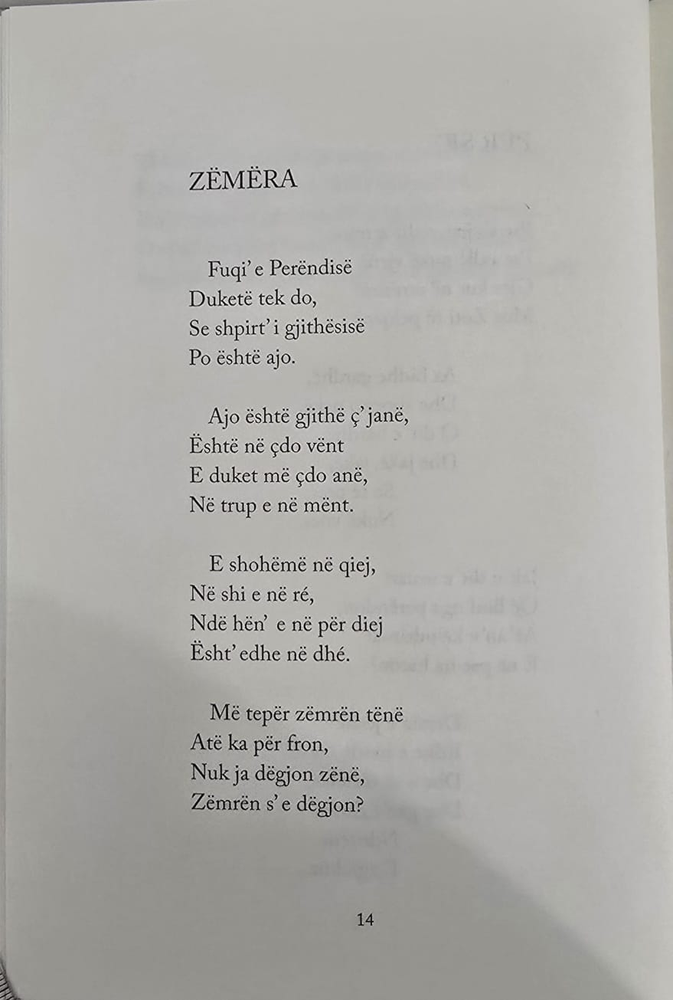

Përshkrimi i Veprës
"Lulet e Verës" është një përmbledhje poetike e Naim Frashërit, botuar në vitin 1890, e cila përfaqëson një nga kulmet e tij në poezi lirike dhe filozofike. Në këtë vepër, Naimi i këndon natyrës, dashurisë për jetën, mirësisë dhe harmonisë universale, duke e lidhur gjithçka me idetë e tij patriotike dhe humaniste. Poemat e saj pasqyrojnë frymën e Rilindjes Kombëtare Shqiptare, duke përçuar mesazhe për dashurinë për atdheun, lirinë, përparimin dhe besimin tek njeriu. Gjuha e përdorur është e pasur dhe e rrjedhshme, me tone të ëmbla dhe optimiste, ndërsa figurat letrare e bëjnë veprën tërheqëse dhe të ndjeshme për lexuesin.
Rëndësia historike
- Fryma e Rilindjes Kombëtare Vepra ndihmoi në forcimin e vetëdijes kombëtare dhe në frymëzimin e shqiptarëve për liri dhe pavarësi.
- Dashuria për natyrën dhe humanizmi Naimi shpreh një lidhje të thellë me natyrën dhe predikon dashurinë, mirësinë dhe harmoninë midis njerëzve.
- Zhvillimi i letërsisë shqipe Me një gjuhë të pastër dhe poetike, "Lulet e Verës" ndihmoi në pasurimin e letërsisë shqiptare dhe në ngritjen e saj në nivele të reja artistike.
- Ndikimi te lexuesitPoezitë e kësaj përmbledhjeje kanë një ton optimist dhe edukativ, duke synuar të frymëzojnë dhe të ndërtojnë një shoqëri më të mirë përmes vlerave morale dhe kombëtare.
